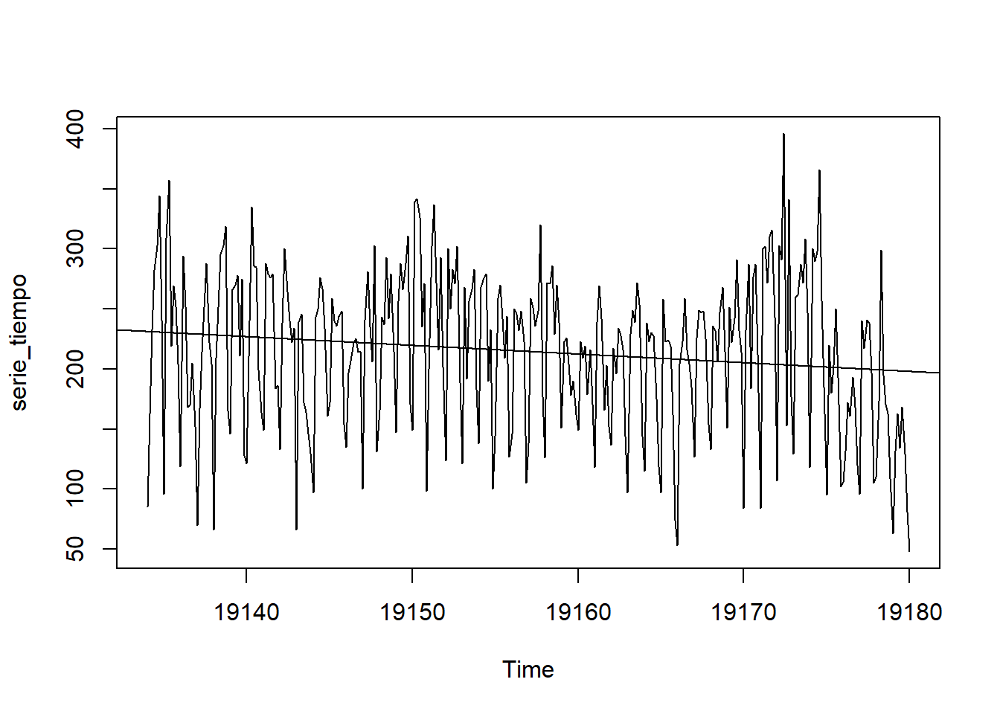
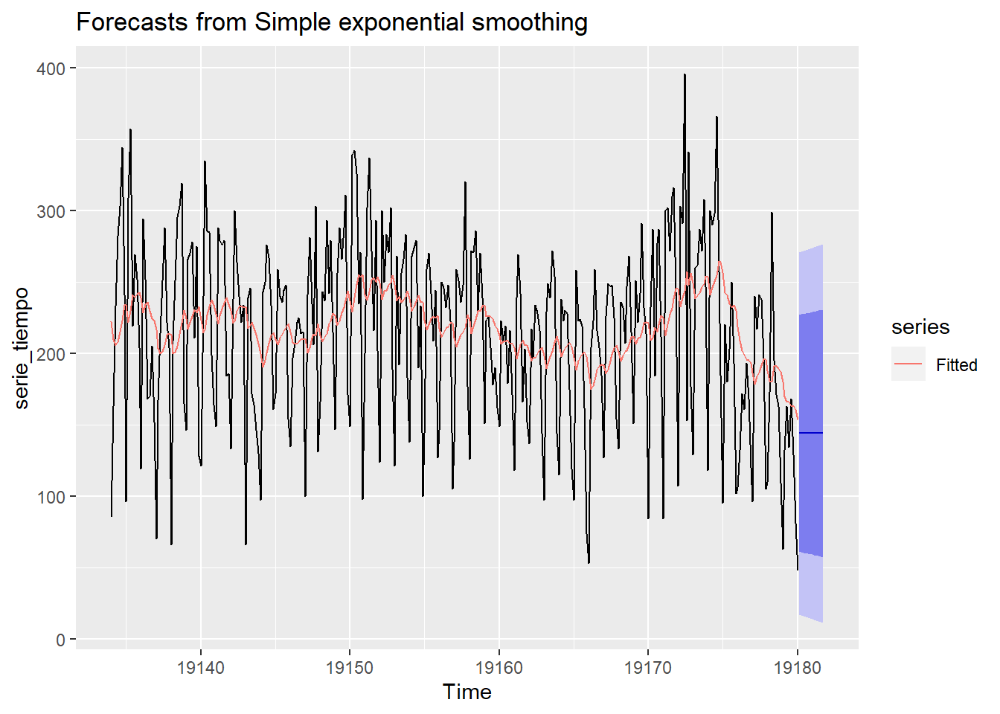

Capítulo 4 Modelado
4.1 Regresión Lineal
Analicemos el modelado de esta serie de tiempo con una regresión lineal; si bien, la regresión no va a ser util para modelar esta serie de tiempo, nos dará una vista general de la tendencia de los datos.

4.2 Suavisamiento Exponencial Simple
el suavisamiento exponencial es especialmente útil cuando se trabaja con datos que muestran tendencias y patrones suaves, pero no poseen patrones estacionales o cíclicos pronunciados. Dado que nuestra serie presenta una fuerte estacionalidad, no se espera que este método genere un buen ajuste a la serie. Analicemos su comportamiento:
## Registered S3 methods overwritten by 'forecast':
## method from
## autoplot.Arima ggfortify
## autoplot.acf ggfortify
## autoplot.ar ggfortify
## autoplot.bats ggfortify
## autoplot.decomposed.ts ggfortify
## autoplot.ets ggfortify
## autoplot.forecast ggfortify
## autoplot.stl ggfortify
## autoplot.ts ggfortify
## fitted.ar ggfortify
## fortify.ts ggfortify
## residuals.ar ggfortifyfcast_ses <- ses(serie_tiempo, h = 12)
autoplot(fcast_ses) + autolayer(fitted(fcast_ses), series="Fitted")
Como era de esperarse, el suavisamiento exponencial simple no logra seguir la fuerte estacionalidad que tiene la serie de tiempo.
4.3 Suavisamiento Exponencial Triple (Holt-Winters)
A continuación analizaremos el comportamiento del modelado Hold-Winters en la serie de tiempo, como se habia provado anteriormente, esta serie tiene estacionalidad y tendencia, por lo que se espera tener buenos resultados con este modelo.
De forma general, se puede ver un buen ajuste del modelo a los datos, no solo en la tendencia que estos llevan sino también en la fuerte estacionalidad que tiene la serie de tiempo. El modelo es capaz de respetar tanto los
4.4 Modelo ARIMA
Como lo hemos visto en el analisis descriptivo y en el modelado de regresión lineal, nuestra serie no es estacionaria, al intentar utilizar un modelo ARIMA se debe garantizar que la serie de tiempo es estacionaria. Para esto se realizará una transformación a la serie para lograr que esta sea estacionaria utilizando la función adf.
##
## Attaching package: 'aTSA'## The following object is masked from 'package:forecast':
##
## forecast## The following objects are masked from 'package:tseries':
##
## adf.test, kpss.test, pp.test## The following object is masked from 'package:graphics':
##
## identify## Augmented Dickey-Fuller Test
## alternative: stationary
##
## Type 1: no drift no trend
## lag ADF p.value
## [1,] 0 -22.7 0.01
## [2,] 1 -19.0 0.01
## [3,] 2 -16.0 0.01
## [4,] 3 -14.2 0.01
## [5,] 4 -18.8 0.01
## [6,] 5 -26.9 0.01
## Type 2: with drift no trend
## lag ADF p.value
## [1,] 0 -22.7 0.01
## [2,] 1 -19.0 0.01
## [3,] 2 -16.0 0.01
## [4,] 3 -14.2 0.01
## [5,] 4 -18.8 0.01
## [6,] 5 -26.9 0.01
## Type 3: with drift and trend
## lag ADF p.value
## [1,] 0 -22.7 0.01
## [2,] 1 -19.0 0.01
## [3,] 2 -15.9 0.01
## [4,] 3 -14.2 0.01
## [5,] 4 -18.7 0.01
## [6,] 5 -26.9 0.01
## ----
## Note: in fact, p.value = 0.01 means p.value <= 0.01Con este resultado confirmamos que la serie ya se encuentra estacionaria.
Encontramos los parametros ARIMA de la serie de tiempo utilizando la funcion auto.arima
## Series: diff(serie_tiempo)
## ARIMA(3,0,2) with zero mean
##
## Coefficients:
## ar1 ar2 ar3 ma1 ma2
## 0.8245 -0.4386 -0.2411 -1.5124 0.7799
## s.e. 0.0690 0.0690 0.0623 0.0464 0.0477
##
## sigma^2 = 3395: log likelihood = -1764.57
## AIC=3541.14 AICc=3541.4 BIC=3563.78
##
## Training set error measures:
## ME RMSE MAE MPE MAPE MASE
## Training set -0.3987745 57.81435 46.44426 68.63847 210.5593 0.9619898
## ACF1
## Training set -0.04708994Utilizando estos parametros para hacer predicciones en el modelo
modelo_arima <- arima(diff(serie_tiempo), order = c(3,0,2))
n_predicciones <- 10
predicciones <- predict(modelo_arima, n.ahead = n_predicciones)
# Visualiza las predicciones
plot(diff(serie_tiempo) , main = "Serie Temporal y Predicciones")
lines(predicciones$pred, col = "red", lty = 2) # Línea de predicciones
legend("topright", legend = "Predicciones", col = "red", lty = 2)Veamos el ajuste del modelo a la serie de tiempo:
library(forecast)
# Graficar la serie de tiempo original
plot(diff(serie_tiempo), main = "Serie Temporal vs. Modelo ARIMA")
# Agregar las predicciones del modelo ARIMA al gráfico
lines(fitted(modelo_arima), col = "blue", lwd = 0.5) # Línea de prediccionesLa serie logra captar los patrones de estacionariedad, se confirma nuevamente que la serie quedo estacionaria, no se evidencian patrones de tendencia en el comportamiento de esta. Si bien aún no podemos definir que modelo se ajustó mejor porque no hemos definido medidas de desempeño, pero para la serie sin tendencia este parece tener un buen ajuste.
4.4.1 Analisis de residuales en modelo Arima
Para que el modelo pueda ser utilizado se debe garantizar que este tiene ruido blanco, por lo que haremos verificaciones de normalidad, independencia y homocedasticidad y media cero en los errores.
4.4.1.1 Normalidad
Ho: Los errores distribuyen normal H1: Los errores no distribuyen normal
##
## Shapiro-Wilk normality test
##
## data: residuales
## W = 0.99528, p-value = 0.4369Con un nivel de significancia de 0.05 no se puede concluir que los errores no siguen una distribución normal. Esto se reafirma en la grafica, la cual muestra un comportamiento muy señido a la linea de normalidad.
4.4.1.2 Homocedastidad y media cero

Del análisis visual que nos da gráfica, se puede concluir que los errores si están centrados en cero pero estos no tienen una varianza constante, por lo que existe heterocedastidad.
4.4.1.3 Independencia
Ho: Los residuo son independientes H1: Los residuos son dependientes
##
## Box-Ljung test
##
## data: residuales
## X-squared = 0.72194, df = 1, p-value = 0.3955A un nivel de significancia de 0.05 no se puede concluir que los residuos no son independientes.
Si bien la mayoria de los supuestos se cumplen, los residuos presentan heterosedasticisas, su varianza varia en el tiempo, por lo que no se puede decir que le modelo presenta ruido blanco.
4.5 Modelo PROHET
Dado que nuesta serie de tiempo presenta una fuerte estacionalidad semanal y que la tendencia es un factor a considerar en ella, el algortimo prohet de facebook podría mostrar resultados interesantes. Analicemos el pronostico ajustando este algoritmo a la serie de tiempo:
## The following package(s) will be installed:
##
## - prophet [1.0]
##
## These packages will be installed into "C:/Users/JSOLISP/OneDrive - TCC/Escritorio/PERSN/Universidad/Series_de_tiempo/PROYECTO_BOOKDOWN/renv/library/R-4.3/x86_64-w64-mingw32".
##
## # Installing packages --------------------------------------------------------
##
## - Installing prophet ... OK [linked from cache in 0.0013s]
##
## Successfully installed 1 package in 15 milliseconds.## Loading required package: Rcpp## Loading required package: rlanglibrary(ggplot2)
data <- data.frame(ds = datos$Date, y = datos$Volume)
# Crear un objeto Prophet
model <- prophet(data, daily.seasonality=TRUE, yearly.seasonality=FALSE)
# Realizar las previsiones
future <- make_future_dataframe(model, periods = 4) # "n" es el número de períodos a predecir
forecast <- predict(model, future)
# Visualizar los resultados
plot(forecast)De forma general podemos decir que el algoritmo no presenta muy buen ajuste a nuestra serie de tiempo.
4.6 Modelo Redes Neuronales de Elman y Jordan
Apliquemos las redes neuronales de Elman y Jordan a nuestra serie de tiempo para analizar el comportamiento que esta tiene
## Time Series:
## Start = c(19134, 1)
## End = c(19180, 1)
## Frequency = 7
## [1] 85 163 233 282 303 344 241 96 309 357 219 269 252 204 119 294 252 168
## [19] 170 205 152 70 167 214 251 288 222 204 66 209 251 295 303 319 165 146
## [37] 266 270 278 211 275 128 121 240 335 286 285 199 164 149 288 279 276 279
## [55] 184 186 133 238 300 264 240 222 234 66 239 246 172 164 146 130 97 243
## [73] 250 276 267 234 161 172 259 240 236 244 248 154 135 197 207 222 225 214
## [91] 215 100 241 281 235 206 303 131 166 243 237 293 242 279 215 147 256 288
## [109] 266 288 311 171 149 339 342 326 235 271 98 200 302 337 272 216 293 202
## [127] 124 300 250 283 271 302 189 121 268 192 256 266 283 183 138 268 274 279
## [145] 190 233 100 144 259 270 242 209 244 127 146 250 246 232 248 223 105 138
## [163] 259 251 236 248 320 177 126 272 271 286 229 270 239 151 223 226 204 178
## [181] 190 162 149 223 209 219 179 216 171 118 239 269 242 166 203 152 137 217
## [199] 196 234 228 216 144 97 229 249 239 272 254 144 115 238 223 230 228 175
## [217] 119 97 258 223 224 219 162 74 53 204 223 259 216 204 185 127 226 249
## [235] 247 248 225 154 133 236 232 207 247 268 215 151 251 222 242 291 232 214
## [253] 84 232 287 184 277 287 212 84 300 302 272 310 316 243 107 303 291 396
## [271] 153 341 177 129 260 262 287 272 308 247 118 300 290 298 366 257 185 95
## [289] 220 180 203 250 193 102 106 132 172 161 193 168 120 96 240 217 241 238
## [307] 197 105 110 173 299 195 171 163 109 63 132 163 134 168 129 81 48## Loading required package: RSNNS## Loading required package: quantmod## Loading required package: xts## Loading required package: zoo##
## Attaching package: 'zoo'## The following objects are masked from 'package:base':
##
## as.Date, as.Date.numeric## Loading required package: TTR4.6.1 Normalizar la Serie de tiempo
Normalizar los datos es necesario para que tengan una escala similar. Esto puede ayudar a que la red neuronal converja más rápido y a obtener mejores resultados
4.6.2 Definir Train Set y Test Set
## [1] 323## [1] 0 1 2 3 4 5 6 7 8 9 10 11 12 13 14 15 16 17
## [19] 18 19 20 21 22 23 24 25 26 27 28 29 30 31 32 33 34 35
## [37] 36 37 38 39 40 41 42 43 44 45 46 47 48 49 50 51 52 53
## [55] 54 55 56 57 58 59 60 61 62 63 64 65 66 67 68 69 70 71
## [73] 72 73 74 75 76 77 78 79 80 81 82 83 84 85 86 87 88 89
## [91] 90 91 92 93 94 95 96 97 98 99 100 101 102 103 104 105 106 107
## [109] 108 109 110 111 112 113 114 115 116 117 118 119 120 121 122 123 124 125
## [127] 126 127 128 129 130 131 132 133 134 135 136 137 138 139 140 141 142 143
## [145] 144 145 146 147 148 149 150 151 152 153 154 155 156 157 158 159 160 161
## [163] 162 163 164 165 166 167 168 169 170 171 172 173 174 175 176 177 178 179
## [181] 180 181 182 183 184 185 186 187 188 189 190 191 192 193 194 195 196 197
## [199] 198 199 200 201 202 203 204 205 206 207 208 209 210 211 212 213 214 215
## [217] 216 217 218 219 220 221 222 223 224 225 226 227 228 229 230 231 232 233
## [235] 234 235 236 237 238 239 240 241## [1] 242 243 244 245 246 247 248 249 250 251 252 253 254 255 256 257 258 259 260
## [20] 261 262 263 264 265 266 267 268 269 270 271 272 273 274 275 276 277 278 279
## [39] 280 281 282 283 284 285 286 287 288 289 290 291 292 293 294 295 296 297 298
## [58] 299 300 301 302 303 304 305 306 307 308 309 310 311 312 313 314 315 316 317
## [77] 318 319 320 321 322 3234.6.3 Creación de Secuencias
El siguiente paso es convierte los datos de la serie de tiempo en secuencias. Esto implica dividir la serie de tiempo en segmentos más pequeños que se utilizarán como entradas y salidas de la red. En este caso como mi serie de tiempo es semanal, utilizare 7 lags.
4.6.4 Diseño de la arquitectura de la red
Se retiras las filas con nulos
De esta forma ya no presentamos nulos en la red
Se definen los inputs y outputs, en este caso los 7 desfaces intentaran predecir la serie real
4.6.6 Validación y ajuste de hiperparámetros
En la grafica siguiente vemos como evoluciona el error de la red con el numero de iteraciones para los parmetros expuestos
### Evaluación del modelo
y <- as.vector(outputs[-test])
plot(y,type="l")
pred <- predict(fit, inputs[-test])
lines(pred,col = "red")Como podemos ver en la grafica de Real Vs Predicor para el test set, las red neuronal de El
4.6.7 Modelo Red neuronal de Jordan
En las redes Jordan, la diferencia esta en que la entrada de las neuronas de la capa de contexto se toma desde la salida de la red